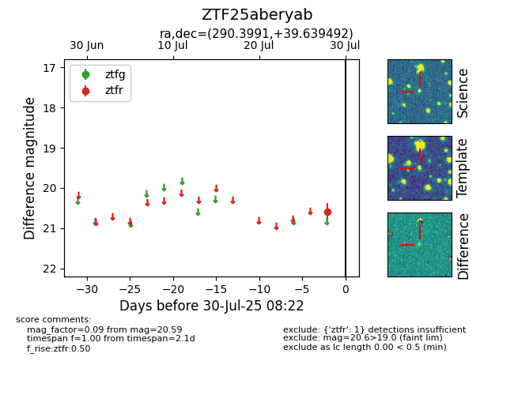

Target ZTF25aberyab at 2025-07-30 08:22, see:
FINK: fink-portal.org/ZTF25aberyab
Lasair: lasair-ztf.lsst.ac.uk/objects/ZTF25aberyab
ALeRCE: alerce.online/object/ZTF25aberyab
alt names
ZTF25aberyab (ztf,fink)
coordinates:
equatorial (ra, dec) = (290.3991,+39.63949)
galactic (l, b) = (71.7339,+11.59370)
photometry
last ztfr=20.59
1 ztfr detections
